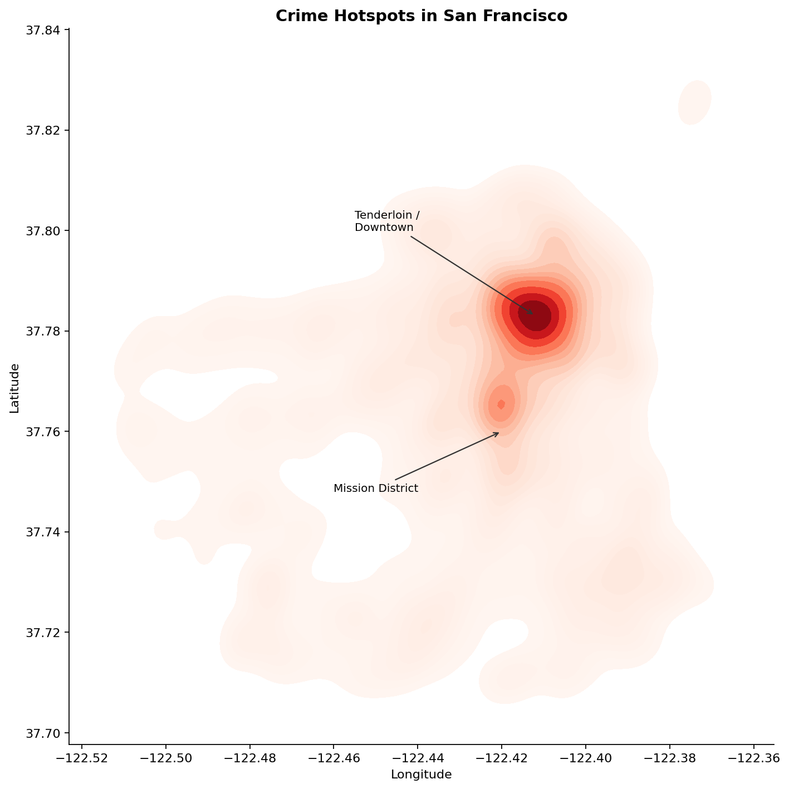

Between 2003 and 2024, San Francisco's Police Department recorded over two million reported incidents. Everything from petty larceny to assault, drug offenses to motor vehicle theft. The dataset is public, granular, and geographic: every entry carries the block-level coordinates where it was reported.
When you plot all those coordinates, a pattern emerges immediately. Crime in San Francisco is not a background hum spread evenly across 49 square miles. It has shape. It has geography. And understanding that geography is the first step toward understanding the city's crime problem at all. This page follows the magazine genre described by Segel and Heer (2010): a single linear narrative in which the author controls the sequence, while the reader retains limited freedom to explore through interactive elements.
The City Has a Hot Core
The density map below visualizes where reported incidents cluster across the full 20-year period. Darker red means higher concentration. The result is striking: a single bright core dominates the map, centered on the Tenderloin and Downtown, with a secondary cluster around the Mission District. The map is produced using a kernel density estimate (KDE), a smoothing technique described in DAOST Chapter 2 that places a smooth peaked function at each data point and sums the contributions to produce a continuous surface, avoiding the binning artifacts of a traditional histogram.

The Tenderloin is San Francisco's most densely populated neighborhood per square mile, with high rates of poverty, homelessness, and open-air drug markets. These conditions both generate incidents and attract enforcement. Which brings us to an important caveat we will return to at the end.
It Looks Different When You Can Zoom In
A static density plot reveals the overall pattern, but it collapses everything into a single layer. The interactive map below lets you switch between the full picture and individual crime categories, use the layer control in the top right corner. It is built with Folium, a Python library for creating interactive Leaflet maps, using a HeatMap layer for each crime category (Hickey, 2019).
Notice how switching categories shifts the geography. Larceny/Theft is concentrated in commercial corridors: Union Square, SoMa, the Embarcadero. Where targets are plentiful and pedestrian traffic is high. Assault spreads more broadly, with clusters in residential neighborhoods as well as the nightlife corridors of the Mission and the Tenderloin. Motor vehicle theft shows yet another pattern: it tracks parking density, with hotspots near the freeway on-ramps and residential blocks with street parking.
Different crimes have different geographies, because different crimes depend on different opportunities.
Not Just Where... But Who Polices Where
San Francisco is divided into ten police districts. The heatmap below shows, for each district, whether a given crime category is over-represented (red) or under-represented (blue) relative to the city-wide average. A value of 1 means exactly average; 2 means twice as likely in that district as in the city overall. Hover over any cell for exact values.
The Tenderloin district stands out sharply for Drug Offenses, a ratio well above 1, meaning drug-related incidents are dramatically overrepresented there relative to the rest of the city. The Southern and Mission districts show elevated Assault ratios. Richmond and Taraval, covering the western residential neighborhoods, look very different: lower across most categories, with Motor Vehicle Theft as a notable exception.
What the Data Can and Cannot Tell Us
Concentration in the Tenderloin does not necessarily mean that more crime occurs there than elsewhere. It means more crime is reported and recorded there. Areas with heavier police presence generate more arrests and incident reports for the same underlying rate of activity, a dynamic that has been documented extensively in the literature on policing bias (Richardson et al., 2019). Research on predictive policing has further shown that systems trained on historical incident data risk amplifying exactly these enforcement patterns, directing even more patrols to already heavily policed areas and making the bias self-reinforcing (Kahn, 2019).
With that caveat in mind, the geographic concentration visible in this data is robust enough across two decades and across multiple crime categories to suggest that something real is being captured. The spatial patterns are consistent and stable, the Tenderloin hotspot appears in every year from 2003 to 2024. Understanding why certain places concentrate crime, and what would need to change to alter that geography, is a question that data alone cannot answer, but that data like this can help sharpen.
Data: SFPD Incident Reports 2003–present, via SF OpenData API
(modern endpoint: wg3w-h783; historical: tmnf-yvry).
Analysis: Python (pandas, seaborn, folium, plotly). Coordinates filtered to
SF peninsula (37.70–37.84°N, 122.35–122.52°W).
Course: 02806 Social Data Analysis and Visualization, DTU, Spring 2026.
References
- Segel, E. & Heer, J. (2010). Narrative Visualization: Telling Stories with Data. IEEE Transactions on Visualization and Computer Graphics
- Wilke, C. O. (DAOST). Chapter 2: A Single Variable - Shape and Distribution.
- Richardson, R., Schultz, J. M., & Crawford, K. (2019). Dirty Data, Bad Predictions: How Civil Rights Violations Impact Police Data, Predictive Policing Systems, and Justice. NYU Law Review Online
- Kahn, J. (2019). Can predictive policing prevent crime before it happens? Science. science.org
- Hickey, D. (2019). How to: Folium for Maps, Heatmaps & Time Data. Kaggle. kaggle.com